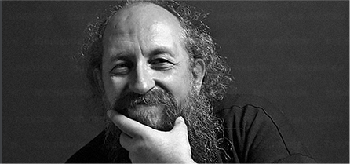

Которые пытаются получить IТ специальность — обламываются и бросают, а в обществе процветает мнение, что для хорошего заработка в этой сфере нужно быть математическим гением-задротом…
… однако на самом деле
Так как Васерман выглядят только программисты, которые готовы жизнь положить на проекты типа «сделать новый Windows»…
Им действительно нужно быть гениями, днями и ночами ковыряться в бесконечном коде, забивать на себя, на отношения, даже иногда на гигиену.
Но если ты не хочешь углубляться в дебри программирования
А просто хочешь заниматься интересными проектами и хорошо при этом зарабатывать, и иметь время на личную жизнь…
Тогда сейчас перед тобой есть другой путь — стартовать карьеру в IT с позиции разработчика веб-приложений или сайтов.